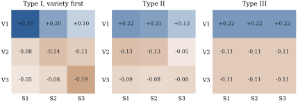

17.2 Types of sums of squares and what they test
Section 9.3 defined the Type I, II and III sums of squares by the subspaces they project onto (Definition 9.3.1, Definition 9.3.2). It also found the cell-mean hypotheses of three of them in the two-way layout: equal weighted row means for a factor entered first, equal unweighted row means for Type III, and a single column of the table for last-in sums of squares under reference coding (Theorem 9.3.2). This section completes the list with one lemma, and then shows that the hypothesis of a main effect’s last-in sum of squares is decided by the coding of the other factor.
17.2.1. One lemma for every sum of squares
Every term of a factorial model has columns that are
constant within cells, so every model matrix we meet has
the form
Let
(a)
(b)
(c) in the cell-means model,
Proof.
- (a)
- (b) By Lemma 9.2.1,
- (c) Let
Part (b) says that the extra sum of squares of
17.2.2. The complete list for two factors
Let the
In the two-way layout with all cells occupied:
(a)
(b)
(c)
(d) the Type III sum of squares of
(e)
The hypotheses have
Proof. Parts (a) and (d) are Theorem 9.3.2(a) and (b). By Lemma 17.2.1(c), each sum of squares is the sum of squares of the hypothesis given by Lemma 17.2.1(b), and it remains to identify that hypothesis and count its degrees of freedom.
- (b) Take
For part (e), the projection is
Degrees of freedom. A complete layout is connected,
so the additive model matrix has rank
In the Type II hypothesis Eq. 17.2.2, row
Under additivity,

In Figure 17.2.1 the
Type I coefficients (V1’s weighted mean minus the
weighted grand mean) do not sum to zero within columns,
so that hypothesis compares sites as well as varieties.
The Type II and Type III tables have zero column sums
and compare varieties within sites. Type II gives site
17.2.3. Why Type III needs contrast codings
Definition 9.3.2 defines Type III through sum-to-zero coding, and Theorem 9.3.2(c) showed that reference coding gives a different hypothesis. The next result settles which codings give Type III and why.
In the two-way layout with all cells occupied, code
The hypothesis depends neither on
Proof. Put
Sum-to-zero, Helmert and orthogonal polynomial
codings of C(x, Sum)
for every factor.
17.2.4. The variety trial, five ways
The table has the layout of Example (Party, education and political self-placement) in Chapter 9, and the listing computes its entries the same way, as squared lengths of projections. For the trial of Example (Three varieties at three sites):
| Term | df | Type I, variety first | Type I, site first | Type II | Type III | reference coding |
|---|---|---|---|---|---|---|
| variety | 2 | 0.571 | 6.184 | 6.184 | 4.958 | 3.601 |
| site | 2 | 31.175 | 25.562 | 31.175 | 27.634 | 7.456 |
| interaction | 4 | 2.146 | 2.146 | 2.146 | 2.146 | 2.146 |
| residual | 28 | 8.781 | 8.781 | 8.781 | 8.781 | 8.781 |
Only the Type I columns add up to the model sum of
squares
The script checks every entry against statsmodels’
anova_lm (types 1, 2 and 3, with
sum-to-zero and Helmert coding for type 3), and recovers
each entry from the matrix
import numpy as np
import pandas as pd
counts = np.array([[7, 4, 2], # rows: varieties V1-V3; columns: sites S1-S3
[3, 5, 4],
[2, 3, 7]])
true_means = np.array([[5.8, 7.2, 7.6],
[5.0, 6.5, 7.5],
[4.4, 5.9, 7.2]])
rng = np.random.default_rng(20172)
rows = [(f"V{i + 1}", f"S{j + 1}", round(true_means[i, j] + rng.normal(0, 0.5), 1))
for i in range(3) for j in range(3) for _ in range(counts[i, j])]
trial = pd.DataFrame(rows, columns=["variety", "site", "y"])
def proj(*blocks):
"""Orthogonal projection onto the span of the given column blocks (any rank)."""
Z = np.column_stack(blocks)
U, s, _ = np.linalg.svd(Z, full_matrices=False)
U = U[:, s > 1e-10 * s[0]]
return U @ U.T
y = trial["y"].to_numpy()
n = len(y)
one = np.ones((n, 1))
ZA = pd.get_dummies(trial["variety"]).to_numpy(float) # variety indicators
ZB = pd.get_dummies(trial["site"]).to_numpy(float) # site indicators
W = np.column_stack([ZA[:, [i]] * ZB for i in range(3)]) # the nine cell indicators
def ss(P):
return y @ P @ y
P0, PA, PB, PAB, M = proj(one), proj(one, ZA), proj(one, ZB), proj(one, ZA, ZB), proj(W)
typeI_AB = {"A": ss(PA - P0), "B": ss(PAB - PA), "AB": ss(M - PAB)} # variety first
typeI_BA = {"B": ss(PB - P0), "A": ss(PAB - PB), "AB": ss(M - PAB)} # site first
typeII = {"A": ss(PAB - PB), "B": ss(PAB - PA), "AB": ss(M - PAB)}def coding(labels, kind):
"""Columns coding a factor: sum-to-zero, or reference level (treatment)."""
D = pd.get_dummies(labels).to_numpy(float)
g = D.shape[1]
C = np.vstack([np.eye(g - 1), -np.ones(g - 1)]) if kind == "sum" else np.eye(g)[:, 1:]
return D @ C
def last_in(CA, CB):
"""Partial (last-in) sums of squares of A and B with interaction columns = products."""
CAB = np.column_stack([CA[:, [i]] * CB for i in range(CA.shape[1])])
full = proj(one, CA, CB, CAB)
assert np.allclose(full, M) # every coding spans the cell-means space
return {"A": ss(full - proj(one, CB, CAB)), "B": ss(full - proj(one, CA, CAB))}
typeIII = last_in(coding(trial["variety"], "sum"), coding(trial["site"], "sum"))
reference = last_in(coding(trial["variety"], "treatment"), coding(trial["site"], "treatment"))
sse = ss(np.eye(n) - M)
for name, t in [("Type I, variety first", typeI_AB), ("Type I, site first", typeI_BA),
("Type II", typeII), ("Type III (sum)", typeIII), ("reference coding", reference)]:
print(f"{name:22s}", {k: round(float(v), 3) for k, v in t.items()})The next cell builds the Type II hypothesis Eq. 17.2.2 and the Type I hypothesis as matrices on the nine cell means, and Eq. 17.1.1 recovers their entries in the table.
cells = trial.groupby(["variety", "site"])["y"]
ybar = cells.mean().to_numpy() # nine cell means, row-major
N = cells.size().to_numpy().reshape(3, 3) # counts n_ij
npi, npj = N.sum(axis=1), N.sum(axis=0)
def hypothesis_ss(L):
"""Sum of squares of L mu = 0 in the cell-means model (redundant rows allowed)."""
u = L @ ybar
return u @ np.linalg.pinv(L @ np.diag(1 / N.ravel()) @ L.T) @ u
# Type II for variety: row i has coefficient n_ij (1[i = k] - n_kj / n_.j) on cell (k, j)
L2A = np.array([[N[i, j] * ((i == k) - N[k, j] / npj[j]) for k in range(3) for j in range(3)]
for i in range(3)])
# Type I, variety first: the count-weighted variety means are equal
wrow = np.array([[(i == k) * N[k, j] / npi[k] for k in range(3) for j in range(3)]
for i in range(3)])
L1 = wrow[[0]] - wrow[1:]
print(f"Type II hypothesis: SS = {hypothesis_ss(L2A):.3f}; Type I hypothesis: SS = {hypothesis_ss(L1):.3f}")17.2.5. Choosing a sum of squares
The advice of Section 9.3 stands: decide the hypothesis first, use Type I only when the order of entry is part of the question, and without interaction prefer Type II. The cell-mean hypotheses sharpen it in three ways.
Test the interaction first. It is the same in every type and tests additivity (Theorem 17.2.2(e)). Under additivity Type II and Type III test the same hypothesis, and Type II is never less powerful (Exercise (C1)).
If the factors interact, the weights of a main-effect hypothesis decide the answer. Choose weights that describe a population (equal weights give Type III), or report simple effects within each column with multiplicity-adjusted intervals (Chapter 13).
Report the hypothesis, not the type. Anyone can read
17.2.6. Exercises
A. Check your understanding
In a
B. Practice
Show that the left sides of the
Solution. Summing over
Show that when
Solution. The first equation is
Suppose the counts are proportional,
Solution. With proportional counts,
Use Proposition 17.2.3
to find the hypothesis of the last-in sum of squares of
C. Going deeper
Suppose the cell means are additive. Let
Solution. Write
In an